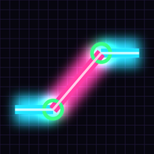

| Cut length | — | The blue pipe. Travel minus both take-offs. |
|---|---|---|
| Travel | — | Fitting center to fitting center. |
| Run (setback) | — | How far along the pipe the 2nd fitting sits. |
| True offset | — | Straight-line shift: √(rise² + roll²). |
| Turn fittings | — | Roll both fittings this far off plumb, toward the roll side, so the cut piece aims at the new pipe. |
| Fittings | Run needed | Cut | Fits? |
|---|
WHY Run is set by the offset and the fitting angle, so you can't pick it. Measure the space between your two points instead: whatever's left after the run is straight pipe, before or after the offset, wherever it's easiest.
Drag to turn it · pinch to zoom · double-tap to reset
| Step | Do this |
|---|---|
| 1 | Rise: measure how far Run 2 sits above or below Run 1, centerline to centerline. |
| 2 | Roll: measure how far Run 2 also sits off to the side of Run 1, centerline to centerline. |
| 3 | Fittings + take-off: pick the pair (two 45s is usual). Take-off = fitting center to where the pipe bottoms out. Measure your actual fitting; it varies by brand and size. Save yours in Calc → Units & tables → My take-offs and they show up as buttons under the inputs. |
| 4 | Set fitting 2 one run (setback) farther along the pipe than fitting 1, center to center (the dots in the drawing). |
| 5 | Cut the blue piece to cut length. Roll both fittings the same amount, the Turn fittings angle off plumb, so it points straight at Run 2. Dry-fit, then glue or solder. |
| Fittings | Travel × | Run × |
|---|---|---|
| 90° | 1.000 | 0 |
| 72° | 1.051 | 0.325 |
| 60° | 1.155 | 0.577 |
| 45° | 1.414 | 1.000 |
| 22½° | 2.613 | 2.414 |
| 11¼° | 5.126 | 5.027 |
By hand: true offset × multiplier. For a simple offset the true offset is just the offset.
| Cut | — |
|---|
| # | Piece | Cut | Remove |
|---|
Fitting center: you measured to the middle of a fitting, so subtract its take-off. Hub face: you measured to the edge of a hub or socket the pipe slides into, so add the socket depth. Pipe end: you measured to the end of a pipe or to a wall. Save take-offs in Calc → Units & tables → My take-offs; they show up as buttons here.
| Pipe | 1st fitting | 2nd fitting |
|---|
WHY The fittings have to sit on a line that splits the turn in half (the dashed lines); that keeps the pipes the same distance apart through the angle. The pipe on the inside of the first turn starts first and comes back first too. Every pipe gets the same travel and the same cut. With 90s, each next fitting moves the full spacing.
Fill in any two. The app uses the two you typed last.
| Square a corner | 3-4-5: mark 3 ft on one line and 4 ft on the other; the diagonal is exactly 5 ft when it's square. Scale it up: 6-8-10, 9-12-15. |
|---|---|
| Circle | Circumference = 3.1416 × D. Area = 0.7854 × D². |
| Answer | — |
|---|
Type like a tape reads: 10' 4 3/8", 7 1/2 (plain numbers are inches), 3'. Multiply or divide by a plain number: 2 x 5", 12' ÷ 3. Use it to subtract take-offs from a center-to-center measurement.
| Mark | From the start | Decimal ft |
|---|
One item at each end of the span (after the in-from-each-end distance), equal gaps between. Support spacing by pipe: Rough → Water supply → Pipe supports.
| Slope | % | 10 ft | 50 ft |
|---|---|---|---|
| ¹⁄₁₆" / ft | 0.52 | ⅝" | 3⅛" |
| ⅛" / ft | 1.04 | 1¼" | 6¼" |
| ¼" / ft | 2.08 | 2½" | 12½" |
| ½" / ft | 4.17 | 5" | 25" |
Code minimums: ¼"/ft for 2½" and smaller, ⅛"/ft for 3"–6". Laser rods read decimal feet: Laser rod targets below does the readings for you.
| Distance | Rod reads | Ft-in | Fall so far |
|---|
WHY The laser beam is level. As the pipe drops away from it, the distance from the beam down to the pipe grows, so the rod reads higher as you go downhill. Read the same spot every time (top of pipe or invert). Ft-in rod? Type it like 4' 6 1/4".
About 4.3 psi lost per floor (10 ft), before friction.
| Pipe | Length ft | Flow gpm | 90s | Tees (branch) | Remove |
|---|
| At the fixture | — | |
|---|---|---|
| Friction | — | Pipe plus fittings, every section. |
| Height | — | 0.433 psi for every foot up. |
| Fastest water | — | Keep it under about 8 ft/s (5 for hot copper). |
| Section | psi / 100 ft | Equiv. ft | Loss | ft/s |
|---|
One row per pipe size, from the start to the fixture. Flow = what runs through that section at once (a lav ≈ 1.5 gpm, a shower ≈ 2 in Utah, a kitchen ≈ 1.8–2.2, a tub filler or hose bibb ≈ 4–6). Start with the static pressure you gauged at the hose bibb or setter. Fitting allowances: copper from the Copper Development Association table (soldered fittings, C 150); PEX from Uponor ProPEX EP spec sheets (expansion fittings narrow the bore, so a PEX elbow costs about 10 ft of pipe). Minimum pressures: IPC Table 604.3. A learning tool: code sizing is IRC P2903 / IPC 604, and the fixture maker's minimum wins.
| Pipe | ID" | Gal/ft | Gal/100' | Lb/100' |
|---|
Copper L, PEX CTS SDR-9, PVC Sch 40. Hot-water wait = gallons in the line ÷ gpm. Utah lavs are capped at 1.5 gpm, so a long ¾" run to a lav is a slow wait: that's what home-run ½" lines and on-demand recirc fix. In your head: PEX ½" ≈ 1 gal per 100 ft, ¾" ≈ 2, 1" ≈ 3.
ft/s = gpm × 0.4085 ÷ ID². WHY Fast water whistles, hammers and wears out copper from the inside, especially hot. Many design guides keep cold under about 8 ft/s and hot copper under about 5 ft/s; the pipe maker's limit wins.
ΔL = coefficient × length × °F change. Typical coefficients; the maker's number wins. WHY Plastic grows 3–10× more than copper. That's why PEX gets slack and CPVC hot lines get offsets or loops.
Gallons = cubic inches ÷ 231. Measure inside dimensions. Water weighs 8.34 lb/gal, so check what the floor is holding.
| Fixture | DFU | How many |
|---|
| Total | 0 DFU | Add fixtures above. |
|---|---|---|
| Horizontal branch | — | Smallest size for this load (Table 710.1(2)). |
| Building drain @ ¼"/ft | — | Table 710.1(1). |
| Building drain @ ⅛"/ft | — | 3" and up only at ⅛". |
Learning tool, not a design. Never smaller than the biggest trap on it. Size stacks from their own column, and check your code's limit on toilets per 3" branch.
| Appliance | Nameplate BTU/h |
|---|
| Pipe size | — | Smallest pipe that carries the load at that length. |
|---|---|---|
| Total load | — | BTU/h ÷ 1,000 = CFH. |
| Table column | — | Rounded up to the next length in the table. |
| Length | ½" | ¾" | 1" | 1¼" | 1½" | 2" |
|---|
CFH capacities from IFGC Table 402.4(2) (same numbers as IRC Table G2413.4(1)): natural gas, 0.60 sp. gr., 1,000 BTU/ft³. Each branch: same longest length, but only the load that branch carries. CSST: use the maker's tables. 2 psi systems use different tables. A learning tool: check it against the code book before you buy pipe.
| Derated input | — | Only if the appliance isn't already set up for altitude. |
|---|---|---|
| Derate | — | 4% for every 1,000 ft of elevation. |
| Gas flow | — | At nameplate input: this is what you size pipe with. |
| Place | ≈ Elevation | Derate | 100k BTU/h → |
|---|
WHY Thin air holds less oxygen per ft³, so full input can't burn clean (soot, carbon monoxide). The maker's altitude instructions win: many appliances sold here are already listed or set up for altitude.
| Recovery | — | gph = BTU/h × eff ÷ (8.34 × rise) |
|---|---|---|
| Temp rise | — | Set point − incoming. |
Plan on 40°F incoming water in a Utah winter (Rheem's northern-state guidance). Tank sizing goes by first-hour rating (gallons it can deliver in the busiest hour, on the label), not just tank size. Tankless: add up the gpm of fixtures that run at the same time.
| 1 gallon | 231 in³ · 3.785 L · 0.1337 ft³ · 8.34 lb water |
|---|---|
| 1 ft³ | 7.48 gal · 1,728 in³ · 62.4 lb water |
| 1 liter | 0.264 gal · 61.02 in³ |
| 1 psi | 2.31 ft head · 6.895 kPa · 0.069 bar |
| 1 ft head | 0.433 psi |
| 1 inch | 25.4 mm |
| Heat water | BTU = gal × 8.34 × °F rise · BTU/h needed = gph × 8.34 × °F rise |
| Circle area | 0.7854 × D² |
| Need | Trick | Try it |
|---|---|---|
| 45° travel | Offset + 40%, plus a hair (× 1.414) | 12" → 12 + 4.8 ≈ 17" |
| 22½° travel | Offset × 2½, plus a little (× 2.613) | 8" → 20 + 0.9 ≈ 21" |
| Cut length | Center-to-center minus a take-off at each end | 17" − 2 × 1" = 15" |
| Fall at ¼"/ft | Feet ÷ 4 = inches of fall (about 2%) | 40 ft → 10" |
| Fall at ⅛"/ft | Feet ÷ 8 = inches of fall (about 1%) | 40 ft → 5" |
| psi from height | About 0.43 psi per foot: a 10 ft floor or a 10 ft test column ≈ 4.3 psi | 30 ft → ≈13 psi |
| Height from psi | psi × 2, plus a third of psi (× 2.31) | 30 psi → 60 + 10 = 70 ft |
| Water in PEX | Per 100 ft: ½" ≈ 1 gal · ¾" ≈ 2 · 1" ≈ 3 | 60 ft ¾" ≈ 1.2 gal |
| Hot-water wait | Gallons in the line ÷ gpm = minutes | 1.2 gal ÷ 1.5 gpm ≈ 48 s |
| Round tank | D² × H × 0.0034 = gallons (inches) | 18" × 24" → ≈26 gal |
| Ft³ to gallons | × 7½ · water is 8⅓ lb/gal, ≈62 lb/ft³ | 4 ft³ → 30 gal, 250 lb |
| Heat water | 8⅓ BTU per gallon per °F | 50 gal × 70°F ≈ 29,000 BTU |
| Tankless flow | BTU/h × efficiency ÷ (500 × rise) = gpm | 199k × .95 ÷ 35,000 ≈ 5.4 |
| Gas flow | Natural gas: BTU/h ÷ 1,000 = CFH | 40k heater → 40 CFH |
| 16ths to decimal | Sixteenths × 0.0625 · eighths × .125 | 5/16 → .3125 |
| Decimal feet | 0.1 ft ≈ 1³⁄₁₆" · 0.01 ft ≈ ⅛" | 0.25 ft = 3" |
| PEX growth | ≈1" per 100 ft per 10°F (copper: ≈1" per 100°F) | 50 ft, 60°F → ≈3" |
| Cold air test | At 80 psi the gauge drops ≈2 psi per 10°F the pipe cools | 60→30°F ≈ −5 psi |
WHY Run the trick before you trust a calculator: if the screen says 34" and your head says 17", a digit slipped. Exact answers live in the calculators.
WHY Take-off (fitting center to where the pipe bottoms out in the hub) changes by brand and pattern, so no chart is exact. Measure the fittings on your truck: center-to-end of the fitting minus the hub depth. Saved take-offs show up as one-tap buttons in the offset calculator.
| Inches | Feet | Inches | Feet |
|---|
Rods read in feet and hundredths. 0.01 ft ≈ ⅛". Quick trick: inches ÷ 12.
| Nominal | OD | Cu K ID | Cu L ID | Cu M ID | PEX ID |
|---|---|---|---|---|---|
| ½" | 0.625 | 0.527 | 0.545 | 0.569 | 0.475 |
| ¾" | 0.875 | 0.745 | 0.785 | 0.811 | 0.671 |
| 1" | 1.125 | 0.995 | 1.025 | 1.055 | 0.862 |
| Sch 40 PVC/ABS | OD | ID |
|---|---|---|
| 1½" | 1.900 | 1.610 |
| 2" | 2.375 | 2.067 |
| 3" | 3.500 | 3.068 |
| 4" | 4.500 | 4.026 |
Hole saw sizes: Rough → Framing. WHY Copper and CTS PEX share an OD (nominal + ⅛"), so the same fittings fit. PEX has a thicker wall, so its ID is smaller and it carries less water at the same size.
| Pipe | Threads/in | Makeup (into fitting) |
|---|---|---|
| ⅛" | 27 | ¼" |
| ¼" | 18 | ⅜" |
| ⅜" | 18 | ⅜" |
| ½" | 14 | ½" |
| ¾" | 14 | ⁹⁄₁₆" |
| 1" | 11½ | ¹¹⁄₁₆" |
| 1¼" | 11½ | ¹¹⁄₁₆" |
| 1½" | 11½ | ¹¹⁄₁₆" |
| 2" | 11½ | ¾" |
Nipple or cut length = center-to-center − both fitting take-offs + both makeups. Makeup varies with the fitting and how tight you go; measure your own.
| Drawn on | Printed on | Real size | What happens |
|---|---|---|---|
| 24×36 | 12×18 | 50% | True half size: a ¼" plan reads at ⅛". |
| 22×34 | 11×17 | 50% | Also true half size. |
| 24×36 | 11×17 "fit" | ≈ 46% | Matches no scale on your ruler. Calibrate. |
| Any PDF | Phone, tablet | ? | Zoom changes the size. Calibrate in the PDF app. |
Answers are estimates: a ¹⁄₃₂" slip on paper is 1½" real at ¼" scale. The written dimension always wins over anything you scale.
| Find the scale | Every drawing on a sheet has its own scale under its title: floor plan ¼", details ½"–1½", site plan 1" = 20'. NTS = not to scale: don't measure it. |
|---|---|
| Check the print | Scale the longest written dimension on the sheet. If it doesn't come out right, the print was shrunk: calibrate. |
| Scale bar | A graphic scale bar shrinks with the print, so it's always right. It's the best thing to calibrate on. |
| Dimensions win | Many sets say "Do not scale drawings." Scale to estimate (take-offs, rough locations). Anything that sets a hole, stub or sleeve: find the dimension or ask the super. |
|---|---|
| Measure long | Errors grow with the scale, not the length: measure the longest run you can, then divide. A thick wall line can be an inch or more wide at ¼". |
| Both directions | Copies can stretch more one way than the other. Check a dimension across the sheet and one up and down. |
| Which line? | Plans dimension to the stud face, foundation face or centerline: the note or the dimension's end ticks say which. Fixture rough-ins count from the finished wall. |
| PDF on a phone | Zoom has no scale. In a measuring PDF app (Bluebeam: Measure → Calibrate), trace a known dimension, enter its length, then check a second one before you trust it. |
| Site plans | Engineer's scale (1" = 20', 30'…) for the sewer lateral and water service. Use the invert elevations (IE) for your fall budget: Calc → Grade → Slope & fall and Laser rod targets. |
| Your own sketch | Use Real → paper above to draw an iso or a take-off to scale on graph paper. |
| CO / FCO / WCO | Cleanout / floor cleanout / wall cleanout |
|---|---|
| VTR | Vent through roof |
| CW · HW · HWR | Cold water · hot water · hot water return (recirculation) |
| WC · LAV · KS | Water closet (toilet) · lavatory · kitchen sink |
| T/S · SH · DW | Tub/shower · shower · dishwasher |
| WH · HB · FD | Water heater · hose bibb · floor drain |
| WB / WMB | Washer box (washing machine box) |
| IE · FFE | Invert elevation · finished floor elevation |
| AFF | Above finished floor |
| BFP · PRV · AAV | Backflow preventer · pressure reducing valve · air admittance valve |
| DFU · WSFU | Drainage / water supply fixture units |
Every plan set has its own legend sheet. When an abbreviation isn't here, check the legend or ask; don't guess.
| Pipe · saw | 2×4 brg | 2×4 non | 2×6 brg | 2×6 non |
|---|
brg = bearing stud, bored to 40% of its depth (2×4: 1.4", 2×6: 2.2"). non = non-bearing, or a doubled bearing stud: 60% (2×4: 2.1", 2×6: 3.3"). small saw = fits only with the smaller saw in the range. Keep ⅝" from either edge (IRC R602.6). Saw sizes are trade practice (OD + about ¼"–⅜"), not code. WHY A 2" drain never fits a 2×4 and a 3" never fits a 2×6. That's why wet walls get planned as 2×6 (or furred out) before framing.
| Member | Notch | Bored hole |
|---|---|---|
| Floor joist | ≤ ⅙ of the depth and no longer than ⅓ of the depth. Never in the middle third of the span. At the ends: ≤ ¼ of the depth. | ≤ ⅓ of the depth, ≥ 2" from the top and bottom edges and from any other hole or notch. |
| Bearing stud | ≤ 25% of the width. | ≤ 40% (60% if doubled, and no more than two doubled studs in a row bored that big). ⅝" from the edge. |
| Non-bearing stud | ≤ 40%. | ≤ 60%, ⅝" from the edge. |
| Top plate bearing wall | Cut or bored more than 50% of its width: steel strap ≥ 0.054" (16 ga) × 1½" wide, reaching 6" past the opening each side, eight 10d nails each side (IRC R602.6.1). WHY The top plate ties the wall together; a 3" stack can cut it nearly in half. | |
Solid lumber only. I-joists, LVL and trusses: see below.
| Never | Cut, notch or drill a flange. Drill through a web stiffener or backer block. Put a hole over 1½" in a cantilever. |
|---|---|
| Always | Read the brand and series printed on the web and use that chart. Plan-marked hole locations win. |
| Doesn't fit? | Stop and call your lead. Supplier or manufacturer tech support can engineer a fix. |
| Joist | 1½" holes | Bigger holes | Hole spacing |
|---|---|---|---|
| BCI Boise | Anywhere in web, 3" from other holes. Bearing zone (6") knockouts only. | Distance "D" from support, per depth table (guide p. 7) | 2× largest hole |
| TJI Weyerhaeuser | Outside hatched bearing zone, 3" from larger holes. Leave ⅛" web top and bottom. | Table A (end) / B (interior). E.g. 2" in 9½" TJI 110 = 12" from end support | Per TJ-9001 |
| LPI LP SolidStart | Anywhere in web, ignore knockouts, ¼" off flanges. | Size and location from LP tables (pp. 14–15) | 2× larger hole or 12" o.c., whichever is more |
| Product | Allowed |
|---|---|
| Versa-Lam LVL Boise | Round only. Max hole by depth: ¾" (5½" to under 7¼"), 1" (to under 9¼"), 2" (to under 18"), 3" (to under 24"), 4" (24"). Space 2× the hole diameter, never stacked, max 3 per 4 ft. |
| Microllam / Parallam Weyerhaeuser | Round only, middle third of span, none in cantilevers. |
| 1.3E TimberStrand Weyerhaeuser | Up to 2", middle third of depth. Never a notch and hole at the same spot. |
| Rim board | No general rule. Ask the manufacturer before a large hole. |
| Open-web truss | Never cut any chord or web without an engineer (IRC R502.11.3). Run pipe through the openings. |
| Townhome common wall | Rated wall between units (often 1-hr with sprinklers, 2-hr without). Model IRC: no plumbing, ducts or vents inside the common-wall cavity; water-filled sprinkler pipe is the exception (R302.2). |
|---|---|
| UTNew 7/1/2026 | Where there's a recorded access or maintenance agreement or easement, plumbing, ducts, Sch 40 steel gas pipe and electric service may penetrate the common wall (Utah R302.2). Ask the super whether the lots have one before you drill. |
| Through a rated wall | Plastic pipe: a listed firestop system (ASTM E814 / UL 1479) with an F rating at least the wall's rating. Steel, iron or copper: the code lets you fill the gap with an approved material, or use a listed system (R302.4.1). Build it exactly like the system drawing: pipe size, sleeve, sealant depth. |
| Garage to house | Pipe through the garage separation: seal the gap with an approved material that stops flame and smoke (R302.5.3 → R302.11 item 4). |
| Top & bottom plates | Every pipe through a plate between floors gets fireblocking around it: fire-rated caulk or foam listed for it (R302.11). Regular foam doesn't count. |
| Leave proof | Keep the firestop maker's system sheet on site for the inspector. |
Rated walls get checked hard. If the plans mark a wall 1-hr or 2-hr, ask which listed system to use before rough-in, not after.
| Water service depth | At least 12" deep and 6" below the frost line (IRC P2603.5 / IPC 305.4). SLC, Provo, Springville and Lehi all design to a 30" frost line, so plan on 36". Many water providers want more (North Salt Lake: 42"); theirs wins. |
|---|---|
| Water service size | ¾" minimum (IPC 603.1). Bigger for a long run or a big fixture load. |
| Water + sewer | 5 ft apart, or in the same trench with the water line on a solid shelf at least 12" above the top of the sewer (IPC 603.2). |
| Through the foundation | Sleeve two pipe sizes bigger, or a relieving arch, so the wall can settle without crushing the pipe. |
| Bedding & backfill | Pipe on firm, continuous bedding: no bricks or blocks under it. No rocks or construction debris against the pipe; tamp backfill in layers. |
| Under the slab | PEX water lines: one continuous run, no fittings under the slab, sleeved where they leave the concrete (Rough → Materials → PEX install). |
| Before cover | Under test and inspected before backfill or the pour. Flag stub-ups so the finisher doesn't bury or bend them. |
Before digging: Blue Stakes 811 (Site → Call → Who to call). Trench 5 ft or deeper: shore, shield or slope (Site → Safety).
| Pipe / trap | Min slope | Max trap arm (trap to vent) |
|---|---|---|
| 1¼" | ¼" / ft | 5 ft |
| 1½" | ¼" / ft | 6 ft |
| 2" | ¼" / ft | 8 ft |
| 2½" | ¼" / ft | — |
| 3" | ⅛" / ft | 12 ft |
| 4" | ⅛" / ft | 16 ft |
| 5"–6" | ⅛" / ft | — |
| 8"+ | ¹⁄₁₆" / ft | — |
| Trap arm rules | Measured from the trap weir to the vent opening. The arm can't fall more than one pipe diameter, and the vent can't be closer than two pipe diameters to the weir. |
|---|---|
| Trap seal | 2" min, 4" max. One trap per fixture, never double-trapped. Trap no bigger than the drain it empties into. |
| Cleanouts | Base of each stack, near where the building drain leaves, every 100 ft of horizontal drain, and at changes over 45°. Clearance in front: houses 12" for pipe under 3", 18" for 3" and up (IRC P3005.2.9); IPC 18". |
| Fittings | San tee: horizontal → vertical only. Combo or long sweep for vertical → horizontal and horizontal → horizontal. |
| Washer standpipe | 18"–42" above the trap weir. |
Trap arm lengths: IPC Table 909.1 / IRC Table P3105.1, the same in 2021 and 2024. Why the limit exists: Learn → How it works.
| Take-off | A vent leaves the drain above the drain's centerline (rolled up, not off the side or bottom) so waste can't run into it. |
|---|---|
| Dry vent rise | Rise at least 6" above the flood rim of the highest fixture it serves before turning horizontal (IRC P3104.5 / IPC 905.4). Lower than that, it can fill and act as a drain. |
| Common vent | Two fixtures can share one vent: at the same level through a double fixture fitting, or at different levels within the limits (IRC P3107). |
| Wet vent | A pipe that vents some fixtures while draining others. Typical house use: horizontal wet venting for up to two bathroom groups on the same floor (IRC P3108). Size it from the wet-vent table. |
| Island sink | Island vent: the vent loops up as high as possible under the counter, drops, and ties in below the fixture drain, with a cleanout (IRC P3112). Or an AAV where your inspector allows it. |
| AAV | Listed (ASSE 1051), set upright ≥ 4" above the branch or fixture drain it vents, ≥ 6" above attic insulation, accessible, in a space with air. At least one vent per building still goes outside. Not on sumps or ejectors unless listed for it (IRC P3114). |
Section numbers are from the 2021 IRC. On layouts, your inspector's call wins.
| Vent size | At least ½ the drain it serves, never under 1¼". Over 40 ft developed length: go up one size. |
|---|---|
| Through roof | Houses (IRC P3103.1.1): at least 6" above the roof or 6" above expected snow, whichever is greater. UT Other buildings (Utah IPC 903.1.1): 12". Run at least 12", and 6" above the expected snow where that's higher. Deep-snow areas like Park City: confirm locally. |
| UTThrough wall | Ends at least 12" out from the wall with the elbow pointing down (Utah IRC P3101.4 / IPC 903.7). |
| Near openings | Not directly under a door, openable window or air intake. Within 10 ft of one, end at least 2 ft above its top (IRC P3103.5; IPC 903.5 says 3 ft). |
| Wall vents | Also ≥10 ft from the lot line, ≥10 ft above grade, and never under a soffit-vented overhang. |
| Frost closure | Where the winter design temp is 0°F or colder: the roof vent must be at least 3" across, and the size increase starts at least 1 ft inside the heated space or below the roof. Ask your inspector what your area requires. WHY Warm, wet vent air frosts at a cold vent top and can seal a small pipe. |
| Roof used by people | At least 7 ft above a roof used for recreation or gatherings. |
| UTLow dry vents | Houses (Utah IRC P3104.4): floor drains and floor sinks only, below grade, with a wall cleanout in the vertical vent. Utah IPC 905.4 also allows tubs. |
| Fixture | DFU | Min trap |
|---|---|---|
| Lavatory | 1 | 1¼" |
| Bathtub (with or without shower head) | 2 | 1½" |
| Shower (≤5.7 gpm total) | 2 | 1½" IPC 2" IRC |
| Shower (5.7–12.3 gpm) | 3 | 2" |
| Kitchen sink (with disposer, dishwasher or both) | 2 | 1½" |
| Dishwasher on its own drain | 2 | 1½" |
| Clothes washer standpipe | 2 | 2" |
| Laundry tray | 2 | 1½" |
| Floor drain emergency floor drain: 0 | 2 | 2" |
| Toilet, 1.6 gpf | 3 | Built in |
| Toilet, over 1.6 gpf | 4 | Built in |
| Bathroom group, 1.6 gpf toilet | 5 | — |
| Bathroom group, over 1.6 gpf | 6 | — |
Bathroom group = toilet + lav + tub or shower on the same floor level; a bidet and an emergency floor drain are already included. Add fixtures outside that list (a second lav) separately. The IRC also has half-bath, kitchen and laundry groups. Houses: IRC Table P3201.7 wants a 2" shower trap. Unlisted fixtures go by trap size: 1¼" = 1, 1½" = 2, 2" = 3, 3" = 5, 4" = 6.
| Pipe | Branch | Stack, ≤3 intervals | Stack, >3: total / each |
|---|---|---|---|
| 1½" | 3 | 4 | 8 / 2 |
| 2" | 6 | 10 | 24 / 6 |
| 2½" | 12 | 20 | 42 / 9 |
| 3" | 20 | 48 | 72 / 20 |
| 4" | 160 | 240 | 500 / 90 |
A branch interval is a story-height section of stack (at least 8 ft) where branches connect.
| Pipe | ⅛"/ft | ¼"/ft | ½"/ft |
|---|---|---|---|
| 2" | — | 21 | 26 |
| 2½" | — | 24 | 31 |
| 3" | 36 | 42 | 50 |
| 4" | 180 | 216 | 250 |
| 5" | 390 | 480 | 575 |
| 6" | 700 | 840 | 1,000 |
A building drain that carries a toilet must be at least 3".
| Sewage ejector | For fixtures below the sewer. Pit at least 18" across and 24" deep (IPC 712 / IRC P3007), gas-tight lid, vented. Discharge: check valve + full-open valve, accessible, then up and over into a gravity drain. |
|---|---|
| Sump (clear water) | Foundation and walkout drains. Discharges to grade or storm as the city requires, never into the sanitary sewer unless the city allows it. |
| Pump sheet | The pump maker sets discharge and vent size; many specs call for a high-water alarm. |
| What it is | A passive radon system: gravel or a collector mat under the slab, and a pipe from there up through a warm part of the house and out the roof. Common in Utah homes, where radon runs high. |
|---|---|
| Never tie in | It carries soil gas. Keep it a separate system: no connection to the DWV, no AAV on it, and don't count it as a vent. |
| Label it | Where it leaves the slab, in closets, in the attic and through the garage, so nobody mistakes it for a plumbing vent or cuts into it. |
| Roof exit | Back side of the ridge is best. EPA guide: at least 10 ft above grade and 10 ft from any window or opening less than 2 ft below the outlet. A ¼" screen, not a rain cap. |
| Slab holes | Seal around pipes through the slab; sealing alone won't fix radon, but open gaps short-circuit the system. |
| Over 80 psi | PRV with strainer, set ≤80 psi (604.8). |
|---|---|
| Expansion tank | When a PRV, check or backflow device closes the system; keep ≤80 psi (607.3). |
| Hammer arrestor | ASSE 1010 at quick-closing valves (washer, dishwasher) (604.9). |
| Hot water limit | Shower valves ASSE 1016, limit stop ≤120°F. Tub fillers ASSE 1070, ≤120°F. |
| UTHose bibbs | Frost-proof, self-draining, with a non-removable vacuum breaker (ASSE 1011, 1019 or 1052). |
| Irrigation on culinary | A testable backflow assembly (PVB or RP) where sprinklers tie into drinking water. Secondary water never connects: Inspect → Utah & cities. |
| UTBackflow | Assemblies tested within 10 days of install, then yearly, by a certified tester (Inspect → Utah & cities → Secondary water (PI)). |
| Nail plates | Plumbing pipe <1¼" from the framing edge: 16 ga plate, extending 2" past sole and top plates (IPC 305). WHY Drywall screws and trim nails reach about that deep. |
| Gas shield plates | See Rough → Gas & WH → Gas piping (1½" from the edge, 16 ga, 4" past the plates). |
| Fixture | Min supply |
|---|---|
| Lavatory | ⅜" |
| Toilet (flush tank) | ⅜" |
| Kitchen sink | ½" |
| Tub, shower, tub/shower | ½" |
| Dishwasher, washer box, hose bibb | ½" |
These are the minimum lines to each fixture, not the trunk.
| Material | Horiz. | Vert. |
|---|---|---|
| PEX ≤1" | 32" | 10 ft |
| PEX ≥1¼" | 4 ft | 10 ft |
| CPVC ≤1" | 3 ft | 10 ft |
| CPVC ≥1¼" | 4 ft | 10 ft |
| Copper ≤1¼" | 6 ft | 10 ft |
| Copper ≥1½" | 10 ft | 10 ft |
| ABS / PVC | 4 ft | 10 ft |
Plastic verticals 2" and smaller also need a mid-story guide (IPC 308.5 / IRC P2605.1).
| Fixture | Utah | Federal | WaterSense |
|---|---|---|---|
| Showerhead | 2.0 gpm | 2.5 | 2.0 |
| Lav faucet | 1.5 gpm | 2.2 | 1.5 |
| Kitchen faucet | 2.2 gpm | 2.2 | — |
| Toilet | 1.6 gpf | 1.6 | 1.28 |
UT Lav 1.5 gpm @ 60 psi and showerhead 2.0 gpm @ 80 psi are Utah amendments (15A-3-205). Toilets stay at the model code's 1.6 gpf; many builders spec 1.28 anyway. A 2022 bill for a statewide 1.28 didn't pass.
| Toilet | Flange center 12" from the finished wall (10" and 14" exist: check the toilet). Supply 6"–8¼" AFF, about 6" left of center. |
|---|---|
| Lav | Drain 16"–20" AFF. Supplies about 21"–22" AFF, 4" each side of center. |
| Kitchen sink | Drain 16"–18" AFF (lower helps a disposer). Supplies about 20"–22" AFF. |
| Washer box | Box about 42"–48" AFF. Standpipe 18"–42" above the trap weir (that part is code). |
| Shower | Valve ≈ 48" AFF. Head arm ≈ 78"–80" AFF. |
| Tub/shower | Valve ≈ 28" above the tub floor (not the room floor). Head arm ≈ 72"–78" AFF. |
| Tub-only valve | ≈ 20"–22" AFF. |
| Tub spout | Per the valve sheet (Delta: 8"–18" below the valve). Spout ≈ 4" above the rim. |
| Hose bibb | About 18"–24" above finished grade. |
| Ice maker box | Per the builder's sheet, behind the fridge. Recessed box so the fridge can push back flat. |
AFF = above finished floor. Builders often have their own standard sheet: get it once, save it in My files.
| Toilet | ≥ 15" center to any side wall or obstruction. ≥ 30" center to center between toilets or bidets. ≥ 21" clear in front to a wall, fixture or door (IRC P2705.1). |
|---|---|
| Lav | ≥ 21" clear in front. UT Utah amends lav clearances (15A-3-205): check the plans and ask the inspector. |
| Shower | ≥ 900 in² inside, and a 30" circle must fit. Door or opening ≥ 22" clear (IRC P2708.1). |
| Slip joints | Must stay reachable: a slip-joint tub waste needs an access opening (IRC P2704.1). |
Accessible (ADA / ANSI A117.1) units have their own numbers; the plans win.
| Liner height | Turns up ≥ 2" above the finished threshold on every side. No nails or screws through the liner below that line. |
|---|---|
| Slope | Pre-slope under the liner ¼"/ft to the drain, so water reaches the weep holes. |
| Drain | Two-piece clamping-ring drain. Protect the weep holes (pea gravel or a weep guard) so mortar can't plug them. |
| Test | Plug the drain, fill to 2" deep at the threshold, hold 15 min with no drop (IPC 312.9 / IRC P2503.6). Mark the water line with tape. |
| Trap | 2" shower trap on a house (IRC Table P3201.7). |
Prefab bases and sheet or foam systems: follow that maker's install and test steps.
| Shutoff | Each appliance: same room, within 6 ft, upstream of the union and connector, accessible. |
|---|---|
| Sediment trap | Tee + capped nipple (≈ 3") after the shutoff, as close to the inlet as practical. Furnace, boiler, water heater. Not needed on ranges, dryers, outdoor grills or decorative appliances. |
| Connectors | Appliance connector ≤ 6 ft long. Never concealed in a wall or floor, never run through a wall, floor or ceiling. |
| Supports | Steel: ½" every 6 ft · ¾"–1" every 8 ft · 1¼" and up every 10 ft (horizontal); vertical at every floor. CSST: the maker's spacing. |
| Shield plates | Pipe less than 1½" from the framing edge: steel plate at least 0.0575" (16 ga), extending 4" past sole and top plates and to each side of the member (IRC G2415.7). CSST makers may require their own striker plates. |
| CSST bond | 6 AWG copper min, ≤ 75 ft long. Listed clamp on rigid pipe or a brass CSST fitting, downstream of the meter. Never on the corrugated tubing. WHY A nearby lightning strike can arc through the thin wall; the bond gives it an easier path. |
| Sizing | Longest-length method: every section is sized by the run to the farthest appliance and the load on that section. Calc → Sizing → Gas line sizer. |
| Test | See Inspect → Phases & tests. Never oxygen. |
| T&P line | Full size of the valve outlet, one line per valve. No valves, tees or threaded end. Drains by gravity, no sags or traps. Ends through an air gap in the same room, in plain view, ≤ 6" above the floor or a receptor; never piped straight into a drain. PEX or PE-RT: one size bigger than the valve outlet, end fastened (IRC P2804.6.1). UT ≤ 180° of total bends. |
|---|---|
| Pan | Where a leak would do damage (attic, upper floor, finished space): 1½" deep, ¾" drain to an indirect receptor or outside 6"–24" above grade. UT With the code official's OK, the pan may drain into a stack or branch: individually trapped and vented, never connected to any vent, heater discharge only (Utah P2801.6.2–.3). |
| Seismic straps | UT Upper and lower third of the tank (Utah P2801.8). Model IRC also keeps the lower strap ≥ 4" above the controls; doing both is never wrong. |
| UTUltra-low NOx | In the Wasatch Front and Uinta Basin pollution (nonattainment) areas, a new gas water heater must be ultra-low NOx: 10 ng/J at 75,000 BTU/h or less, 14 above (Utah Code 15A-6-102). The areas don't follow city lines: check the address ↗. The NOx number is on the label. |
| Cold shutoff | Full-open valve on the cold supply at the heater. |
| Expansion tank | Closed system (PRV, check or backflow device): yes. Set its air charge to house pressure with the water off. |
| Garage | Burner and ignition ≥ 18" above the floor unless the heater is FVIR-listed (IRC G2408.2). Out of a car's path or behind a bollard (G2408.3). |
| Location | Gas heater not in a bedroom, bathroom or a closet off them unless it's direct-vent or in a sealed closet (IRC G2406.2). |
| Venting | Natural-draft connector slopes up ≥ ¼"/ft toward the vent. Power-vent and direct-vent: the maker's pipe, lengths and terminations. |
| Tankless | Isolation (service) valves, condensate neutralizer to a drain on condensing units, gas line sized for full input (often 199k BTU/h: run the Gas line sizer), metal pipe at the unit if the maker says so. Set the altitude (Inspect → Utah & cities → Altitude settings). |
Utah heater amendments: 15A-3-205 (houses); HB 65 (2026) changed some heater rules, so confirm the current text. The heater's install manual is part of the code: leave it at the house.
| The rule | Electric tank heaters 20–55 gal made after May 6, 2029 must reach UEF 2.30: in practice, a heat pump. Gas tanks only get a small efficiency bump. The gas tankless rule was withdrawn in 2025. |
|---|---|
| Air | It pulls heat from room air: about 700 ft³ of space for most 240V units (some 450), or a louvered door or ducting per the maker. Best in a 50–90°F space; in a cold Utah garage it leans on the backup element. |
| Condensate | It makes water. Plan a condensate drain (or pump) at rough-in, and set the unit level so it drains. |
| Electric | Usually 240V / 30A, like a regular electric tank. 120V plug-in models exist for gas swaps, sized up about two tank sizes. |
| Cold air & noise | Blows cool air and hums like a fridge (≈ 45–55 dB): keep it away from thermostats and bedrooms. Seismic straps still apply. |
A heat-pump-ready spot = enough air (or a duct path), a drain within reach, and a 240V circuit. Cheap at rough-in, expensive later.
| First check | Power-vent, direct-vent (sealed) heaters and 90%+ furnaces bring air in through their own pipe: follow the maker. This is for natural-draft heaters and furnaces. |
|---|---|
| Indoor air | 50 ft³ of room per 1,000 BTU/h, counting every appliance in the space, only when the house leaks enough (≥ 0.40 air changes per hour). New tight houses usually don't: use the known-infiltration calculation or outdoor air. |
| Borrow a room | Two openings, one within 12" of the ceiling and one within 12" of the floor, each 1 in² per 1,000 BTU/h (100 in² minimum). |
| Outdoors, 2 openings | Same top and bottom spots. Direct or vertical ducts: 1 in² per 4,000 BTU/h each. Horizontal ducts: 1 in² per 2,000 BTU/h each. |
| Outdoors, 1 opening | Within 12" of the ceiling: 1 in² per 3,000 BTU/h, and no smaller than the vent connectors' combined area. |
Louvers and grilles cut the free area: if it isn't marked, figure wood ≈ 25% open, metal ≈ 75%.
| Material | Standard | Notes |
|---|---|---|
| PEX tube | F876/F877 | Print lists approved fittings. |
| PEX expansion | F1960 | Mostly PEX-A, PEX ring. |
| PEX crimp | F1807/F2159 | Mostly PEX-B. |
| CPVC | D2846 | Hot and cold supply. |
| PVC DWV | D2665 | Primer F656 (purple) + cement D2564. |
| ABS DWV | D2661 | Cement D2235. |
| ABS ↔ PVC | Transition fitting | Transition cement (D3138, green) only at drain-to-sewer joint. Check 2024 IPC 705. |
| Copper | B88 | K green · L blue · M red · DWV yellow. |
| Bend radius | Uponor PEX-a and Zurn PEX-b: ≥6× OD. Viega and SharkBite PEX-b: 8× OD free bend (Viega 5× with a bend support). |
|---|---|
| Sunlight | Uponor white: 1 month max. Red/blue Uponor, Zurn, SharkBite: 6 months. Cover it on site. |
| Rating | 100 psi at 180°F (also 160 psi at 73°F, 80 psi at 200°F). |
| Near gas vents | ≥6" from a gas appliance vent (Uponor: 1" from double-wall B-vent). |
| Water heaters | Electric or power-vent: direct OK where local code allows. Most tankless makers want metal pipe at the heater. Zurn: manifold ≥18" from heater outlet. |
| Slab | Sleeve or wrap where it enters and leaves concrete. No fittings buried in the slab; one continuous run. |
| Expansion | Leave ⅛"–³⁄₁₆" slack per foot; snake buried lines. |
| Chemicals | Only approved firestop. Keep petroleum or solvent paints, caulks and greases off the pipe. |
| Fittings | Match the fitting to the standard printed on the pipe (F1960, F1807, F2159). See Pipe markings. |
| Air temp | ½"–1" | 1¼"–2" |
|---|---|---|
| Above 60°F | 1 hr | 2 hr |
| 40–60°F | 2 hr | 4 hr |
| Below 40°F | 4 hr | 8 hr |
Timed from the last joint. Testing up to 400 psi: double the cure. Rated 100 psi at 180°F. Use ≥6" of metal at a gas water heater. Below 50°F no ratchet cutters (cracks). Hot lines need offsets for expansion (~4" per 100 ft per 100°F).
| Hot (95°F+) | Pipe lying in sun runs 20–30°F hotter than the air, and solvent flashes off before you push the joint. Shade the pipe and the cans. Cool the ends with a damp rag, then dry them. Make the critical joints in the morning. Use a heavier-bodied cement, keep both surfaces wet when you join, and work fast (Weldon/IPS hot-weather guide). |
|---|---|
| Cold | Cure time stretches a lot below 40°F (see the CPVC table; PVC and ABS makers publish their own charts). Keep cans in the cab. Never warm cement or pipe with a flame: the vapor is very flammable. Below about 50°F cold plastic cracks under ratchet cutters: use a wheel or saw. |
| Utah County | Design temps run 13°F to 95°F, so you'll hit both ends in one year. Site → Weather → Go / no-go flags glue days. |
| Lead-free | Solder and flux ≤0.2% lead. Pipe, fittings, fixtures ≤0.25% lead (weighted average of wetted surfaces). |
|---|---|
| Standards | Solder ASTM B32 · flux ASTM B813 · joint practice ASTM B828. |
Type colors (K, L, M, DWV): see Pipe markings.
| The rule | Trim has to match the brand and the valve family already in the wall. A Moen trim won't go on a Delta valve, and even inside one brand most families don't cross (Moen Posi-Temp trim won't fit an M-CORE valve). |
|---|---|
| ID the valve | Brand and model cast or printed on the body, the plaster guard or the test cap. The box or spec sheet at the house. The builder's fixture selection sheet. Pull a cartridge and read its stamp. |
| Where's the cartridge? | Some families ship it in the valve (Moen Posi-Temp, Kohler Rite-Temp). Others ship it with the trim (Moen M-CORE, Delta MultiChoice), so a "universal" valve becomes a pressure-balance or thermostatic shower depending on the trim you buy. |
| WHYPressure balance | A spool slides to keep hot and cold pressures equal. Someone flushes, cold pressure drops, the spool cuts hot too, so nobody gets scalded. One handle = temperature (and sometimes volume). ASSE 1016. |
| WHYThermostatic | A wax or bimetal element senses the actual water temperature and mixes to hold it. Usually lets you set volume separately. Costs more, holds temperature tighter. |
| Valve in the wall | Trim that fits | Cartridge |
|---|---|---|
| Moen M-CORE U-series rough, M-PACT system | M-CORE 2-series (temp only) or 3-series (volume + temp). Upgrade 2 → 3 without opening the wall: new handle, escutcheon, cartridge. | 1212 (2-ser) 1213 (3-ser) with trim |
| Moen Posi-Temp since 1985 | Posi-Temp trim only. Rotate handle = temperature; no volume control. | 1222 in valve |
| Moen Moentrol since 1970s | Moentrol trim only. Push/pull = volume, rotate = temp. | 1225 in valve |
| Delta MultiChoice Universal R10000 series | 13/14 series (pressure balance), 17 series (separate volume + temp), 17T (thermostatic). Each trim comes with its cartridge. With stops: R10000-UNWS. Thin-wall/fiberglass: UNWSBXT. | RP46074 (13/14) RP46463 (17) RP47201 (17T) with trim |
| Kohler Rite-Temp K-8304 valve + cartridge kit | Kohler Rite-Temp trims. ½" universal NPT/sweat, stops built in. Adjustable high-limit stop. | In the valve kit |
| Pfister 0X8 0X8-310A | Pfister trims made for the 0X8 valve (trim sold separately). | Pressure balance, in valve |
| American Standard Flash RU101 rough | American Standard trims for the Flash valve. One cartridge = ceramic mixing disc + balancing spool. | In valve |
| GROHE GrohFlex Universal rough-in box 35026000 | GrohFlex pressure-balance or thermostatic kits. The control module ships with the trim. Stops and a flushing plug built in. | With trim |
Part numbers checked on maker and supplier pages, Oct 2026. Models change; the box and the maker's site win. Phone numbers: Trim → Finders & tech lines.
| Angle stops | ½" inlet (sweat, PEX, compression) to ⅜" OD compression out. Toilet supplies end in a ⅞" ballcock nut. |
|---|---|
| Toilet | Measure rough first (12" typical). Flange on top of the finished floor. Snug closet bolts side to side, a little at a time; over-torque cracks china. Ask the builder whether they want the base caulked. |
| Disposer + dishwasher | Knock out the dishwasher plug inside the disposer inlet before hooking up, or the dishwasher won't drain. Fish the plug out. |
| Dishwasher drain | High loop to the underside of the counter or an air gap, whichever your code and inspector require. WHY It keeps dirty sink water from siphoning back into the dishwasher. |
| Lav / sink traps | Slip joints stay accessible. Trap no bigger than the drain it empties into. |
| Before you leave | Aerators off and flushed, then back on. Check every stop and supply for weeps after 10 minutes. Leave the install sheets for the owner (SLC checks them at rough and final). |
New construction shortcut: the builder's fixture selection sheet lists every model in the house. Get it once per subdivision and save it in My files.
| Kitchen faucet | Back of the spout or base; a tag on a supply hose under the sink; the install sheet or box. The cartridge stamp once it's out. |
|---|---|
| Lav faucet | Front curve under the spout or back of the base; tag under the sink. Moen: removable handle caps may have a number underneath. |
| Shower / tub valve | Pull the handle and escutcheon: brand and model on the valve body or plaster guard. Then the cartridge stamp. Handle shape and how it moves (rotate, push-pull, two handles) narrows the family: Trim → Shower valve families. |
| Toilet | Inside the tank on the back wall: model number and a date stamp. The bowl often has its own number underneath or inside the rim. Tank and bowl numbers differ. |
| Water heater | Rating plate on the jacket: model, serial, gallons, input BTU/h or element watts, gas type (NAT / LP). Serial gives the age: see Labels & age. |
| Tankless | Rating plate on the side of the cabinet or inside the front cover. |
| Disposer | Label on the bottom of the unit (look from below with a light). |
| PRV, backflow, valves | Cast or stamped on the body; larger assemblies carry a metal tag with model, size and serial. |
| Hose bibb | Brand on the handle or body. Frost-free length matters: measure from the wall flange to the end of the tube. |
| Pipe & fittings | Print line along the pipe, and the standard molded on PEX fittings: Rough → Materials → Pipe markings. |
| Gas appliance | Rating plate inside the burner door or near the gas valve: input, gas type, altitude setup. |
Kohler serial numbers are usually 9 characters, often starting with "S", with no dashes.
| Brand | How to read it | Example |
|---|---|---|
| Rheem · Ruud · Richmond | First 4 digits = month, then year (MMYY). | 0519… = May 2019 |
| A.O. Smith · State · American newer units | First 4 digits = year, then week (YYWW). | 1910… = 2019, week 10 |
| Bradford White | 1st letter = year on a 20-year cycle (A = 2004 or 2024). 2nd letter = month, A = Jan to M = Dec (no I). Year letters skip I, O, Q, R, U, V. | SC… = Mar 2018 |
| Tankless & others | Many plates print the manufacture date. If not, call the maker with the serial. | — |
| A 2004 / 2024 | B 2005 / 2025 | C 2006 / 2026 |
| D 2007 | E 2008 | F 2009 |
| G 2010 | H 2011 | J 2012 |
| K 2013 | L 2014 | M 2015 |
| N 2016 | P 2017 | S 2018 |
| T 2019 | W 2020 | X 2021 |
| Y 2022 | Z 2023 |
Older units used other codes (older A.O. Smith: a month letter plus 2-digit year). WHY Age decides repair vs. replace and whether the warranty still applies. Chart for more brands: Trim → Finders & tech lines.
| Input | BTU/h (gas) or watts per element (electric). Gas input is what you size the gas line with. |
|---|---|
| Gas type | NAT (natural) or LP (propane). They use different orifices and pressures: never swap without the maker's conversion kit. |
| Capacity | Nominal gallons. Real usable hot water is less. |
| First-hour rating | Gallons of hot water it can deliver in a busy hour. The number to size by. |
| UEF | Uniform energy factor: efficiency rating. Higher is better. |
| Max pressure | Working pressure rating (often 150 psi). The T&P must match the plate. |
| Altitude | Some plates or labels show a high-altitude setup or derate. |
| Angle stop | ½" inlet (sweat, PEX, comp) × ⅜" OD compression outlet for faucets and toilets. |
|---|---|
| Faucet supply | Most new faucets: ⅜" compression. Older faucets: ½" IPS. Some kitchen faucets have braided lines built in. |
| Toilet fill valve | ⅞" ballcock thread on the tank. Supply line: ⅜" comp × ⅞" ballcock nut. |
| Shower arm & head | ½" NPT. |
| Tub spout | ½" IPS threaded or slip-on over ½" copper (set screw). The valve sheet says which and how long the stub-out is. |
| Washer box & hose bibb | ¾" garden hose thread (GHT). Seals with a hose washer, not pipe dope. |
| Ice maker | Usually ¼" OD compression at the fridge (check the fridge's sheet). |
| Dishwasher | ⅜" compression supply line to a 90° elbow on the machine's inlet valve (usually ⅜" MIP × ⅜" comp). |
| Aerator | Standard: male 15/16"-27 or female 55/64"-27. Smaller "junior" and "tom thumb" sizes exist: match with an aerator gauge or the old one. |
| Water heater | Usually ¾" NPT water connections; ½" NPT gas inlet on most residential tanks. |
| Traps | Tubular slip-joint: lav 1¼", kitchen and laundry 1½". |
| Toilet flush valve | 2" or 3" drain opening: measure it before buying a flapper. |
WHY "⅜" compression" means ⅜" outside diameter, which is ¼" nominal copper. Compression sizes are OD; pipe sizes are nominal. Specs and plans win over this list.
| Thread | Shape | Seals by |
|---|---|---|
| NPT pipe thread, MIP / FIP | Tapered | The threads wedging tight. Use dope or PTFE tape. |
| NPSM / IPS faucet supplies, shanks | Straight | A washer, cone or O-ring. Tape doesn't make it seal. |
| GHT garden hose, washers | Straight, 11½ TPI | A hose washer. Won't mate with NPT even though both are ¾". |
| Compression | Straight nut | The ferrule (sleeve) crushing on the tube. No dope on the threads. |
| Flare gas connectors | Straight nut | The flared cone face. No dope on a flare face. |
ID a thread: measure the male OD and count threads per inch (a pitch gauge, or a tape against 1"). Male ½" NPT ≈ 0.84" OD, ¾" ≈ 1.05", 1" ≈ 1.315", the same as steel pipe OD.
| Copper / PEX size | Measure the OD and subtract ⅛": 0.875" OD = ¾" nominal. |
|---|---|
| Steel / PVC / ABS | Match the OD to Trim → Threads & sizes → Pipe sizes: 1.900" = 1½", 2.375" = 2". |
| Cartridge or stem | Overall length, stem length, spline count on the broach, and any ears or tabs. Lay it on a tape and photo it. |
| Toilet rough-in | Finished wall (not baseboard) to the center of the closet bolts: 10", 12" or 14". |
| Flapper | Measure the flush valve opening: about 2" or about 3". |
| Basket strainer | Standard kitchen sink opening is 3½". |
| Frost-free bibb | Wall flange to the end of the tube inside (common 4"–14"). |
Calipers make this fast and exact. Tape measure: read across the widest point and round to the nearest ⅛".
Calling instead? Maker tech lines are in Trim → Finders & tech lines. Have photos, model, serial and install date ready.
Screen updates every 10 s. Data refreshes as fast as each source publishes: forecast every 10 min (15-min model steps), station readings about hourly, alerts every 5 min.
Waiting for the forecast…
| Loading… |
Wasatch Front winter inversions trap PM2.5. Model estimate (about 45 km grid): for an official reading check the Utah DAQ site.
| Time | Temp | Feels | Rain | Wind | Sky |
|---|
—
| Day | Low / High | Rain | Gusts | Sky |
|---|
| Loading… |
| Loading… |
Soil temperature is modeled for open ground, not under a slab or snow pile. WHY Frost works down from the top: when the 2" reading stays below 32°F for days, digging gets hard and exposed underground work needs protection. Water service still goes 6" below the design frost line (≈36" at SLC).
| Loading… |
Depth to water = feet from the ground surface down to the water in the nearest USGS-monitored wells. It shows the area's water table, not your exact lot: irrigation, low spots and clay layers can put water much shallower in a trench. WHY High groundwater means wet trenches, pumping, flotation risk for empty pits and soft bedding.
| Loading… |
| # | Phase | What you're doing · when it's ready |
|---|---|---|
| 1 | Underground ground / sub-rough | Building drain, under-slab branches, water service sleeve. Under test and inspected before the pour. Some cities do the sewer lateral separately. |
| 2 | Rough-in top-out / 4-way | After framing: stacks, vents through the roof, branch drains, water, gas. Tubs and showers set, nail plates on. All under test before insulation. |
| 3 | Gas | Piping under test. Often the same visit as rough. |
| 4 | Finish trim | After paint: toilets, faucets, sinks, disposer, heater hookups, hose bibbs. |
| 5 | Final | Everything working, heater fired, no leaks. The meter is often on the city's public-works final. |
Every visit: permit card and approved plans on site, and the system under test when the inspector shows up. SLC also wants install instructions at rough and final.
Typical items. Your city's list and your lead win.
| System | Method | Value | Hold |
|---|---|---|---|
| DWV | Water (2021 IRC and IPC) | 10 ft head | 15 min |
| DWV metal | Air (base IPC: no plastic) | 5 psi | 15 min |
| UTDWV plastic | Air, only if water can't be used or would freeze | ≤6 psi | ≤15 min |
| DWV plastic | Vacuum: in the 2021 IRC (houses) and 2024 IPC, not the 2021 IPC | −5 psi (−10" Hg) | 15 min |
| Water | Water | ≥ working | Until inspected |
| UTWater plastic Utah IPC 312.5. On a house, get the inspector's OK first. | Air | 50–80 psi | ≤15 min |
| Shower pan | Water | 2" at threshold | 15 min |
| Gas | Air, nitrogen or CO₂, never oxygen | 1.5× working ≥3 psi | 10 min |
Many Utah cities want gas at 5 psi for 15 min. UT plastic air tests are capped: watch the gauge, stand clear, bleed down slowly. A joint can blow.
| Cold alone would read | — | Same air, new temperature. |
|---|---|---|
| Verdict | — | Enter what the gauge reads now. |
WHY Trapped air shrinks as it cools (gas law on absolute pressure: gauge + air pressure, ≈12.5 psi at 4,500 ft). A shell that cools 30°F overnight drops an 80 psi test about 5 psi with no leak at all, and a 5 psi DWV test about 1 psi, which is 20% of it. Sun on the pipe pushes it the other way. Read the gauge at the same temperature you set it at, or let this do the math. Still dropping more than this says? Soap the joints.
| Screws & nails | Most simple leak callbacks come from trades who work after you, and the hole may not leak until the house moves. Plate anything under 1¼" from the face, mark plate spots for the drywall crew, photograph your plates. WHY With no plate and a normal-length screw, the plumber usually pays for the repair (Copper Development Assn.). |
|---|---|
| Baseline test | Before cover: gauge photo with the time and psi. Retest at final and compare. That photo settles arguments. |
| Wall photos | Every wall and ceiling after rough, before insulation, keyed to a floor-plan number. Find pipes later without opening drywall. |
| PEX expansion (F1960) | Square cut. Ring to the stop. Insert right after the last expansion; you should feel resistance (none = over-expanded). After it shrinks, a gap over ¹⁄₁₆" at the shoulder: cut 2–3" back and redo with a new ring. Under 40°F use fewer expansions and keep rings and fittings in your pocket. Never on PEX-B or C (Uponor). |
| PEX crimp | Ring ⅛"–¼" from the pipe end, tool square to the pipe, jaws fully closed, go/no-go gauge on every crimp. Test-crimp at the start of each job: worn tools crimp loose. |
| Freeze | Warm side of the insulation, air leaks sealed. WHY Insulation only slows heat loss; with no heat source the pipe still freezes (ICC). |
| Pressure | Expansion tank precharge = static house pressure (factory is about 40 psi). Gauging and PRV: Inspect → Utah & cities → Utah water. |
| Sewer bellies | Compacted bedding, haunch to the pipe's midline, backfill in 6" lifts, keep equipment off the trench; pea gravel won't compact (ASTM D2321). Ball or camera it before backfill and again before the slab. UT Utah County soils can collapse when they get wet, so an underground leak can settle a foundation. |
| Shower valves | Confirm tile + backer thickness with the super, then set depth to the plaster-guard range. Strap the valve solid. Flood-test pans and tubs before tile. |
| Tankless | Altitude setting (Inspect → Utah & cities → Altitude settings), isolation/flush valves for our hard water, on-demand recirc instead of a continuous loop (a continuous loop cuts Rinnai's warranty to 3 yr). |
Sources: Builder Magazine, Copper Development Assn., Uponor and Boshart install guides, ICC, Plumbing & Mechanical (2025), Rinnai warranty. Your shop's standard wins.
| City | How to book · what's different |
|---|---|
| Utah County | |
| Eagle Mountain | Email request ↗ Include the permit number. No confirmation email back = you're not on the schedule. First come, first served. Order: underground plumbing → 4-way → a separate frost-protection insulation inspection → final. Final needs the meter set: lid at grade, setter 20" ±2" below the lid, nothing within 5 ft; $50 re-final if it isn't. |
| Lehi | 385-201-1035 Phone only: no voicemail, email or online booking. 24 hr notice. Lists a 30" minimum frost line. Not-ready re-inspections get a fee. Sewer lateral: 2% minimum slope to the property line, inspected before backfill. One culinary and one PI connection per lot. |
| Provo | Schedule an inspection ↗ Booking is through the city's self-service portal. Design frost depth 30"; house pressure should stay under 75 psi (city water report). |
| Saratoga Springs | Email request ↗ or 801-766-6507 x120 One business day ahead: by 5 pm Mon–Thu, 4 pm Fri. No 4-way on Fridays. Separate ground plumbing, walkout drain and sewer lateral inspections (lateral with a water test set). |
| Spanish Fork | CitizenServe portal ↗ · help 801-804-4540 24 hr ahead. Ready by 8 am the day of, or a $93 re-inspection fee. Underground plumbing and water/sewer laterals inspected before cover; gas pressure test in that stage; rough plumbing on the 4-way; shower pan inspection with framing. |
| Springville | City Inspect ↗ · building 801-489-2704 Booked online in AM/PM blocks once the permit is issued; some inspections wait on earlier ones. Frost depth 30". Secondary-water switch-over inspection, $50. |
| Orem · American Fork | No booking details we could confirm online. Ask your super or the city building office. |
| Salt Lake & Summit | |
| Herriman | 801-446-5327 Call one working day ahead, before 4 pm. Subrough: 10 ft water or 5 psi, 15 min. Gas 5 psi, 15 min. Shower pan water test. Separate secondary-water connection inspection. Meter is on the Public Works final. |
| West Jordan | 801-569-5050 Building dept: inspection requirements and status. Permit Center M–F 8–5. |
| South Jordan | CityView portal ↗ Permits and inspections online. |
| Park City | 435-615-5101 Book in the City Inspect app by 3 pm for next day. AM 8–12, PM 12–4. Plans + permit on paper on site. Deep snow: confirm vent height. |
| Unincorporated SL County | MSD permits & inspections ↗ 385-910-5830 Email ↗ Greater Salt Lake Municipal Services District (Kearns, Magna, Copperton, etc.). Inspection hotline or email before 3 pm for next business day. |
| Salt Lake City | See Site → Call → Who to call. |
Every city: permit card and approved plans on site, and the system under test when the inspector shows up. Checked Oct 2026; your super's schedule and the city site win.
| Houses | 2021 IRC plumbing and gas chapters + Utah amendments. Utah did not move to the 2024 IRC. |
|---|---|
| Everything else | 2024 IPC, IFGC, IMC, IBC, IECC. 2023 NEC. |
| Older permits | Applied for before 7/1/2026: usually the 2021 IPC with that era's amendments. The permit card says. |
| Utah changes | Utah Code Title 15A, chapter 3. Tagged UT in this book. |
| UTNew 7/1/2026 | From HB 65: townhome common walls may be penetrated with an easement (Rough → Framing → Fire walls) · sprinklers to P2904 or NFPA 13D · dual-source irrigation needs an RP (Inspect → Utah & cities) · "certified backflow tester" defined · gray water adds clear waste at pH 6–9 · water-heater rules dropped "in certain areas" (read the bill or ask your inspector). |
| School vs. job | MTECH teaches the IPC. On a house the inspector enforces the IRC + Utah. Most numbers match; where they don't, this book says so, and the IRC wins on a house. |
| The tables here | DFU, trap-to-vent, slopes, pipe supports and the water/air test values in this book are the same in 2021 and 2024; 2024 adds the vacuum test. Houses still go by the 2021 IRC either way. |
|---|---|
| Section numbers | Mostly the same between editions. If a cite doesn't match your book, search the topic, not the number. |
| New or changed in 2024 | What it means |
|---|---|
| 312.4 | Vacuum test written into the IPC: −5 psi (−10" Hg), 15 min. The 2021 IRC already allows it on houses for plastic DWV. Handy in winter. |
| 504.7 | Plastic pans under gas water heaters must meet flame-spread (≤25) and smoke (≤450) limits. |
| 501.9 | Water heaters must meet NSF 372 (lead-free, ≤0.25% weighted average). |
| 705 | Above-ground mechanical joints on ABS/PVC: shielded type, marked for the use. |
| 605 | Stainless steel tubing added to supply pipe tables; one-step solvent cement allowed where the maker's instructions allow it. |
| 606.1 | Multi-tenant buildings (3 stories or less) on one supply: a shutoff for each tenant. |
From ICC's 2024 IPC significant-changes presentation. Confirm the exact wording in the edition your job is under.
| What it is | Pressurized irrigation: untreated canal or reservoir water for lawns, in its own pipes. Separate box and meter near the front property line. |
|---|---|
| The hard rule | Never connect secondary to culinary (drinking) water, not even with a valve (Utah Code 19-4-112). That's a cross-connection. |
| WHYWhy care? | It's untreated and can carry E. coli and fertilizer (Lehi). One wrong hookup and a whole neighborhood's drinking water can get it. |
| Who has it | Utah County, confirmed on city sites: Lehi, Saratoga Springs, Eagle Mountain, Spanish Fork, Springville. American Fork likely. Orem: no citywide PI. Elsewhere: ask. |
| Tell them apart | Purple = irrigation / non-potable. Blue = potable. Green = sewer (APWA). Springville: purple PE tubing, purple "non-potable" tape about 12" over the pipe, tracer wire, 30" cover, green IRRIGATION box in the park strip. Saratoga: green box near the property line, usually a 1" ball valve. |
| Field rules | Separate trench from the water service (Eagle Mountain doesn't allow sharing). Nothing but purple past the PI box. Never a hose bibb off PI at the house. Tag PI valves. |
| Pressure | Can run 40–125 psi depending on lot elevation (Springville). If it's more than the sprinklers need, add a reducer on the irrigation side. |
| Season | About mid-April to mid-October. Saratoga drains the week of Oct 15; Lehi wants connections off by Oct 15. |
| Meters | State law: every secondary connection metered by Jan 1, 2030 (Utah Code 73-10-34). New lots may already get one. |
| UTDrinking-water backup | If potable water backs up a PI system: an RP right after the potable connection, then a dual-source connection so only one supply can flow. Tested within 10 days of install and every year. RP at least 12" above grade with 12" clear around it, horizontal unless listed otherwise, never in a pit or piped straight to a drain (Utah amendments 1301.5, 608.1.2.1). |
| Inspection | Some cities inspect the sprinkler-to-PI connection separately: Herriman lists it; Springville charges $50 for the switch-over. |
| Where | Hardness | Source |
|---|---|---|
| Provo | 10–15 gpg | City 2024 water report |
| American Fork | 13 gpg | Utility figure via tapwaterdata |
| Highland | 11.4 gpg | Utility figure via tapwaterdata |
| Lehi | ≈9 gpg | Calculated from Ca + Mg |
| Orem | 8.2 gpg | Utility figure via tapwaterdata |
| Lindon | 6.9 gpg | Utility figure via tapwaterdata |
| Saratoga Springs | 5.6 gpg | Utility figure; wells + CUWCD blend |
| Salt Lake City | 8–12 gpg | Treatment plants; some wells over 30 |
| Eagle Mtn, Spanish Fork, Springville, Payson, Vineyard | ? | Not confirmed: ask the city or test it |
| Hard means | Over 7 gpg is hard; over 10.5 is very hard. Many cities blend wells with river water, so it shifts by season. |
|---|---|
| On the job | Scale in tanks (rumble, ticking, anode wear) and in tankless heat exchangers. Rinnai's warranty excludes scale and water-quality failures, so tankless always gets isolation/flush valves. Crusty aerators look like a pressure problem and aren't. |
| Softeners | Common. No Utah amendment covers the discharge: base code applies, so an air gap on the regen drain into an indirect receptor. Loop location is your shop's standard. Check anodes more often on softened water. |
| Disinfection | Free chlorine in every Utah County system checked (CUWCD, Saratoga, Eagle Mountain). No chloramine found. |
| Pressure | Swings with lot elevation: bench lots and valley floors differ a lot. Provo says keep the house under 75 psi. Gauge the hose bibb at the setter before you set the PRV and the expansion-tank charge. |
gpg = grains per gallon (1 gpg = 17.1 mg/L). For a lot's real number, the city's annual Consumer Confidence Report or a test strip beats any table.
| Frost depth | 30" design (Provo, Springville; Lehi lists 30" too). Water service 6" below that: plan on ≈36"; the city's standard drawings win. |
|---|---|
| Design temps | Winter 13°F, summer 95°F, Provo elevation 4,491 ft (Provo design criteria). |
| Collapsible soil | The Utah Geological Survey maps the alluvial fans from Point of the Mountain to Nephi as collapse-prone: dry soil that gets wet can drop. A small underground leak or lawn water against the foundation can settle a house. Compact in lifts; test every underground line. |
| Shallow groundwater | Trouble starts when groundwater is within about 10 ft: flooded trenches and basements (UGS). Likely near Utah Lake (Vineyard, west Provo, low Saratoga and Lehi). Read the lot's geotech report; expect sumps and footing drains. Live well levels: Site → Ground. |
| Radon | About 1 in 3 Utah homes tested is over the EPA action level (Utah DEQ). Seal every slab penetration. |
| Navien NPE-2 | Installer menu 1.2.14 → "2" for 2,000–5,400 ft. Above 5,400 ft (some upper-bench lots) it needs the high-altitude kit. |
|---|---|
| Rinnai V65 | DIP switches: the 2,001–5,200 ft setting, with its own gas-pressure values (tech bulletin TB-099). |
| Tank heaters | Many are certified high enough that valley elevation needs no change (one Rheem example: to 8,500 ft). Read the label. |
| The habit | Open every gas appliance manual to its altitude section. A tankless left at sea-level settings burns dirty: a classic callback. |
Sizing gas pipe or derating by hand: Calc → Sizing. The maker's altitude instructions win.
| Emergency | 911 Fire, injury, or a gas leak you can smell. |
|---|---|
| Gas leak | 1-800-767-1689 Enbridge Gas, 24/7. Smell gas? Get everyone out first, then call from outside. No switches, no lighters. Strong smell or fire: 911. |
| Poison Control | 1-800-222-1222 24/7. Primer, cement, flux or chemical splash or fumes. |
| Power line down | 1-877-508-5088 Rocky Mountain Power outages and downed wires, 24/7. Or text OUT to 759677. |
| Serious injury at work | 801-530-6901 UOSH (Utah OSHA). Report a death, hospital admission or serious injury within 8 hours. Your employer usually reports it. |
| Unsafe job site | 1-800-530-5090 801-530-6901 UOSH, imminent danger. Federal OSHA 1-800-321-6742; Utah runs its own plan, so UOSH comes first. |
| Unpaid wages | 801-530-6801 Utah Labor Commission, wage claims. M–F 8a–5p. |
| Blue Stakes ↗ | 811 801-208-2100 48 business hours before digging (clock starts 8 am the next business day, so plan on 3 business days), max 14 days ahead. Ticket good 21 days. Marks only to the meter, so private lines may not be marked. |
|---|---|
| SLC inspections ↗ | 801-535-7224 Mon–Fri 7 am–3:30 pm. To schedule: SLC Building Inspections app, the online portal or 801-535-6000 (automated); next-day requests by 3 pm. Other cities have their own line. |
| Enbridge Gas ↗ | Service 1-800-323-5517 Formerly Dominion / Questar. New service and meters: Construction Services. Gas leak: see Emergency above. |
| DOPL ↗ | 801-530-6628 Licenses, renewals, exam approval. |
| Ferguson Orem | 801-225-8855 1554 W Business Park Dr · Mon–Fri 7 am–4 pm |
|---|---|
| Ferguson Lehi | 385-345-9734 2001 N 1450 W |
| Mountainland Supply | 801-224-6050 Orem-rooted; now part of Mountain States Supply. |
| BJ Plumbing Supply | Orem 801-224-6600 · American Fork 801-763-5861 |
Ask the counter about manufacturer rep trainings and lunch-and-learns: they're free, and they're where you meet the reps. Hours change; call first.
| Brand | Phone | Hours · notes |
|---|---|---|
| Moen | 1-800-289-6636 Pro: 1-877-663-6776 | 1-800-BUY-MOEN. M–F 6a–5p |
| Delta | 1-800-345-3358 | M–F 6a–4p · Sat 7a–4p |
| Kohler / Sterling | 1-800-456-4537 | M–F 7a–4p |
| American Standard | 1-855-815-0004 Trade: 1-800-442-1902 | M–F 7a–4p (trade 6a–5p). Call or text. |
| Pfister | 1-800-732-8238 | M–F 8a–5p · Sat 7:30a–3:30p |
| Grohe | 1-855-815-4726 | M–F 7a–4p. Call or text. |
| Gerber | 1-888-648-6466 | Customer service (from Gerber install guides) |
| Mansfield | 1-877-850-3060 | M–F 6a–4p |
| Hansgrohe | 1-800-334-0455 | M–F 7a–3p. Also tech support. |
| Elkay | 1-800-476-4106 Tech/warranty: 1-800-260-6640 x1 | Weekdays, Central business hours |
| Symmons | 1-800-796-6667 | 1-800-SYMMONS |
| Brand | Phone | Hours · notes |
|---|---|---|
| Bradford White | 1-800-334-3393 General: 1-800-523-2931 Warranty: 1-800-531-2111 | Top number is the pro tech line, 24/7. |
| Rheem | 1-800-432-8373 | M–F 6a–6p |
| A. O. Smith / State | 1-877-552-0010 | M–F 6a–8p · Sat–Sun 7a–4p |
| Navien | 1-800-519-8794 | Option 2 = contractor support. M–F 6a–6p · weekends 6a–2p |
| Rinnai | 1-800-621-9419 Pro on-job: 1-844-319-1230 | Top is customer care; pro line is the tech line. M–F 6a–6p |
| Noritz | 1-866-766-7489 | Press 1 for tech |
| InSinkErator | 1-800-558-5700 | M–F 7a–6p · Sat–Sun 8a–5p |
| Company | Phone | Notes · hours MT |
|---|---|---|
| Uponor PEX | 1-888-594-7726 | Tech and customer service |
| Viega | 1-866-838-8714 | Tech support (ProPress, PEX) |
| SharkBite | 1-877-700-4242 | M–F 6a–4p MT |
| Zurn / Wilkins | 1-855-663-9876 | Includes backflow and PRVs |
| Watts | 1-978-689-6066 | Press 2 for tech |
| Oatey | 1-800-321-9532 | 6a–3p MT |
| Sioux Chief | 1-800-821-3944 | Main line |
| Charlotte Pipe | 1-800-438-6091 | Main line, ask for tech |
| NIBCO | 1-888-446-4226 | Technical services |
| Weyerhaeuser TJI | 1-888-453-8358 | Trus Joist tech support (hole questions) |
| Boise Cascade BCI | 1-800-232-0788 | Or open a ticket: support portal ↗ |
| LP SolidStart | 1-888-707-2285 LP: 1-888-820-0325 | I-joists bought on or after 8/1/2022: Pacific Woodtech (top number). Older stock and rim board: LP. |
Before you call: photo the label or rating plate (model + serial), know the install date, and have the address. Hours are Mountain Time and can change; numbers checked Oct 2026.
| Hazard | Rule | § |
|---|---|---|
| Trench 5 ft+ | Shore, shield or slope (unless stable rock). Under 5 ft too if the competent person sees cave-in risk. | .652 |
| Trench 4 ft+ | Ladder or ramp within 25 ft | .651(c) |
| Any trench | Competent person inspects daily and after rain | .651(k) |
| Fall 6 ft+ | Guardrail, net or harness | .501 |
| Ladder | 3 ft above landing or secured | .1053 |
| Concrete dust | Saw: water. Drill: shroud + HEPA. Core rig: water. | .1153 |
| Torch | Clear or shield combustibles, extinguisher in reach, fire watch during and after (1 hr per NFPA 51B) | .352 |
| Primer / cement | Very flammable vapor: ventilate, no flame, goggles, gloves | SDS |
| Show up | On time, tools and material ready. |
|---|---|
| Hands off | Other trades' tools and materials. |
| Own it | Report damage you cause right away. |
| Clean up | Haul your trash; leave it cleaner. |
| Coordinate | Talk to HVAC and electrical early about joist bays. |
| No blame | Never knock another trade in front of the builder or owner. |
| The trap | Holds 2"–4" of water that blocks sewer gas from the house. |
|---|---|
| The problem | Water falling down a drain pulls air behind it like a plunger. With no air path, that suction siphons the trap dry. Air shoved ahead of a big slug can also blow the seal out. |
| The fix | A vent lets air in and out right near the trap so pressure stays even. |
| WHYDistance limit | On small pipe at ¼"/ft the max is pipe size × 4 ft (1½" → 6 ft, 2" → 8 ft): that's exactly where the arm has fallen one full pipe diameter. Any farther and the vent opening drops below the trap weir, the arm becomes an S-trap and siphons itself dry. |
| Gurgle test | A drain that gurgles or a trap that keeps losing water usually means a vent problem. |
| Goal | Water must move fast enough to carry solids, about 2 ft/s (often called scouring speed). |
|---|---|
| Big pipe | Flows faster at the same slope: more water, less rubbing on the walls for its size. So 3" and up reach scouring speed at ⅛"/ft. |
| Small pipe | More friction for the water it holds, so it needs the extra push of ¼"/ft. |
| Too steep? | Code sets no maximum. You'll hear "water outruns solids"; the bigger real-world limit is your fall budget: every extra ⅛"/ft costs depth over a long run. |
| San tee | Its short curved turn works when flow drops from horizontal into a vertical pipe: gravity pulls it straight down. |
|---|---|
| Combo / long sweep | Going vertical to horizontal, falling water hits the turn hard. A long, gradual turn keeps solids moving and stops backups, so use a combo (wye + ⅛ bend) or long sweep. |
| On its back | A san tee laid flat throws flow across into the other branch. Use a wye. |
| Device | How it works | Where you see it |
|---|---|---|
| Dual check | Two spring-loaded checks in a row. Can't be tested. | Water meters |
| Double check (DC) | Same idea plus shutoffs and test cocks, so it can be tested. | Fire lines, low-hazard |
| RPZ | Relief valve between the two checks keeps that zone at lower pressure. If a check leaks, water dumps out the relief port instead of flowing back. | Irrigation, boilers, high hazard |
A dripping RPZ is doing its job: a check needs service. Utah testing rules: Rough → Water supply.
| Dip tube | Sends incoming cold water to the bottom so hot water stays on top. A broken one = lukewarm water fast. |
|---|---|
| Anode rod | Magnesium or aluminum rod that corrodes so the steel tank doesn't. Used up = tank starts rusting. Softened water eats it faster; check it every 1–2 years. |
| Gas valve / thermostat | Controls the burner (electric heaters use elements). |
| Flue baffle | Slows the hot exhaust so more heat goes into the water. |
| T&P valve | Opens on too much temperature or pressure. Last line of defense, not a pressure control. |
| What happens | Heated water expands. In an open system it pushes back to the street main. |
|---|---|
| The catch | A PRV, check valve or backflow device blocks that path. One maker's example: 80 psi at 74°F climbs to about 310 psi at 90°F with nowhere to go. |
| Symptoms | T&P dripping after heating, banging, bulged or leaking tank, running toilets. |
| Fix | An expansion tank sized for the system, with its air charge set to the house pressure. |
| WHYThe aha | Water barely compresses, so a cup of expansion has nowhere to go and pressure spikes. The tank's air cushion squeezes instead. Set the air charge with the water off, or the bladder starts out already full. |
| Cause | A fast-closing valve stops moving water instantly. Its momentum turns into a pressure spike that slams through the pipe. |
|---|---|
| Usual suspects | Washer and dishwasher solenoids, quick faucets, high pressure, loose pipe. |
| Fix | Arrestors (ASSE 1010) at the quick-closing valves, solid pipe support, pressure under 80 psi. |
| Home-run manifold | Trunk & branch | |
|---|---|---|
| Layout | One line from the manifold to each fixture. | Big main line with tees off to fixtures. |
| Pros | Steady pressure when several run, a shutoff per fixture, small lines = faster hot water. | Least pipe, simple, familiar. |
| Cons | Most pipe and the most holes in framing. | Pressure drops when several run; no central shutoffs. |
A hybrid (remote mini-manifolds off a trunk) sits in between.
| Code idea | Water and drain pipe can't be put where it will freeze unless it's protected (IPC 305.4). |
|---|---|
| Outside walls | Keep supply lines out of exterior walls, unheated attics and garages when you can. If you can't, the pipe goes on the warm side of the insulation. |
| WHYWhy pipes split | Ice takes about 9% more room. The split usually happens between the ice plug and a closed valve, where trapped water has nowhere to go. |
| Water service | 6" below the frost line: about 36" along the Wasatch Front (30" frost). See Rough → Drains → Underground. |
| Hose bibbs | Frost-free: the valve seat sits inside the warm wall and the barrel is pitched to drain outside. A hose left on holds water in the barrel and can split it inside the wall. |
| Vents | Frost closure: in very cold areas the roof vent goes up in size (see Rough → Vents → Vent sizing & terminals). |
| Winter tests | Water tests can freeze. Drain them right after inspection, or use the vacuum test (2021 IRC) or Utah's air-test options. |
| Place | ≈ Elev. | Water boils | Air pressure |
|---|---|---|---|
| Sea level | 0 ft | 212°F | 14.7 psi |
| St. George | 2,860 ft | 207°F | 13.2 psi |
| Salt Lake City | 4,230 ft | 204°F | 12.6 psi |
| Provo · Logan | 4,490–4,535 ft | 204°F | 12.5 psi |
| Heber City | 5,600 ft | 202°F | 12.0 psi |
| Park City | 6,940 ft | 199°F | 11.4 psi |
| Rule of thumb | Water boils about 1°F lower per 500 ft of elevation (the table uses the real air pressure, so it can differ by a degree). |
|---|---|
| Hot water flashes | Inside a tank, pressure keeps water liquid well past boiling. Once it's out of the pipe, anything hotter than the local boiling point turns to steam. A runaway heater at 205°F in Salt Lake spits steam at faucets and the T&P outlet. That's one reason the T&P line ends low and in plain view. |
| Test gauges | Gauges read psig: zero is your local air pressure, so a 5 psi test means the same thing anywhere. Temperature still moves the needle: Inspect → Phases & tests → Leak or just cold? |
| Gas | Thinner air, less oxygen: appliances derate about 4% per 1,000 ft above 2,000 ft (Calc → Sizing → Altitude derate). Tankless altitude settings: Inspect → Utah & cities → Altitude settings. |
Tap a topic to narrow the list, or type any word in the search bar. Missing a word? It's a good one to ask your journeyman, then add.
| License | Classroom | OJT as apprentice |
|---|---|---|
| Residential journeyman | 432 hr | 6,000 hr |
| Journeyman | 576 hr | 8,000 hr |
| 1 · Apprentice license | Apply to DOPL; employer names your supervisor ($116 on the 2022 form). |
|---|---|
| Supervision | Immediate supervision, max 3 apprentices per supervisor. 4th year: up to 8 hr unsupervised per 24. |
| 2 · School + hours | ≥72 classroom hr per semester at 75%+. Max 3,000 OJT hr per 12 months. |
| MTECH | 4 yr, 8 semesters, 576 hr. Test-out after semester 4A (6,000 hr) fits the residential path. Confirm which license you're testing for. |
| 3 · Exams | Written (remote OK) + Utah Plumber Practical in person. Pass, then apply. |
| Exam reality | Statewide pass rates, Jun 2025–Jun 2026: theory 69%, residential theory 56%, practical 55%. The practical is a PVC project and a copper project, 37 points each; the average was 26.2 on PVC and 25.2 on copper, so practice copper. MTECH beat the state: theory 85%, practical 60%. Weak spot statewide: hydronics (DOPL bulletin, May 2026). |
| 4 · Renew | Every 2 yr, Nov 30 of even years: 2026 is a renewal year. 12 CE hr, 8 core. |
| Upgrade | Residential → journeyman: 2,000 hr non-residential + 4th-year class (144 hr). |
| Loading your files… |